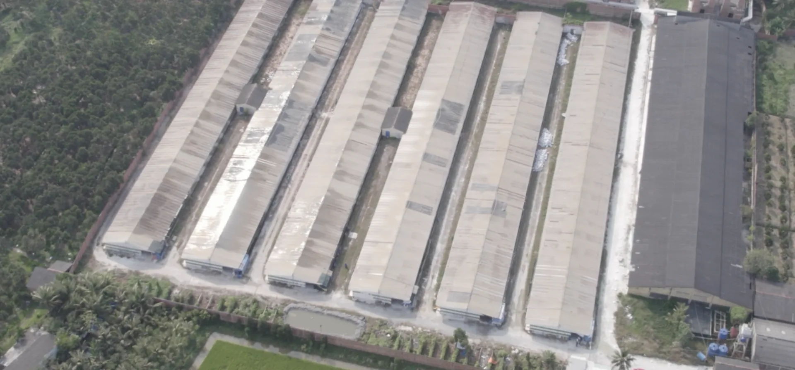

{{d}}
- {{x}}

{{s.t}}
{{s.d}}
{{s.t}}
{{s.d}}
Liên hệ đặt hàng
Nhận báo giá {{p.name}}
Để lại thông tin, bộ phận kinh doanh FarmPlus sẽ gọi lại trong giờ hành chính để trao đổi về số lượng, thời điểm và giá theo từng đợt xuất chuồng.
- Hotline: 0989 799 429
- farmplusgroup@gmail.com
Đã nhận yêu cầu. FarmPlus sẽ liên hệ với bạn sớm.